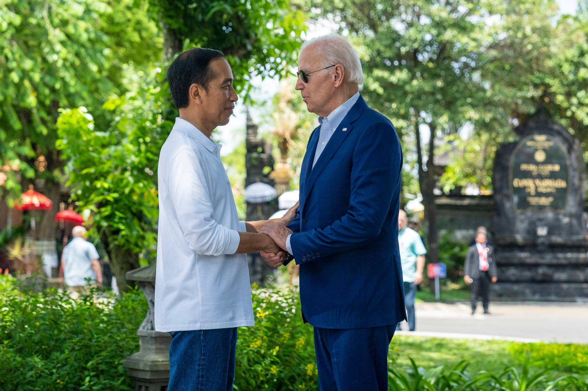
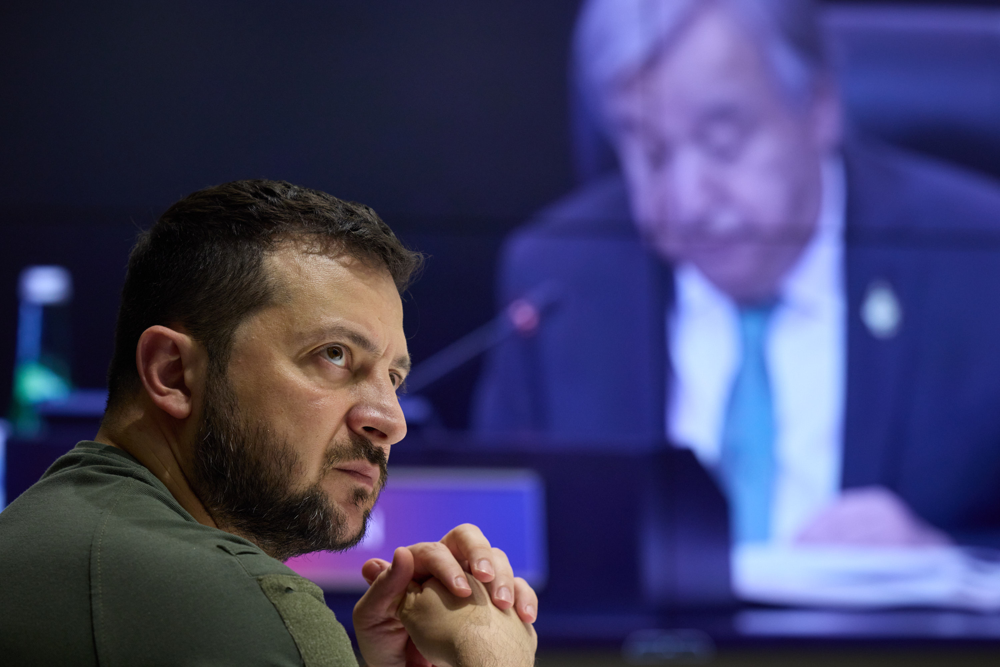
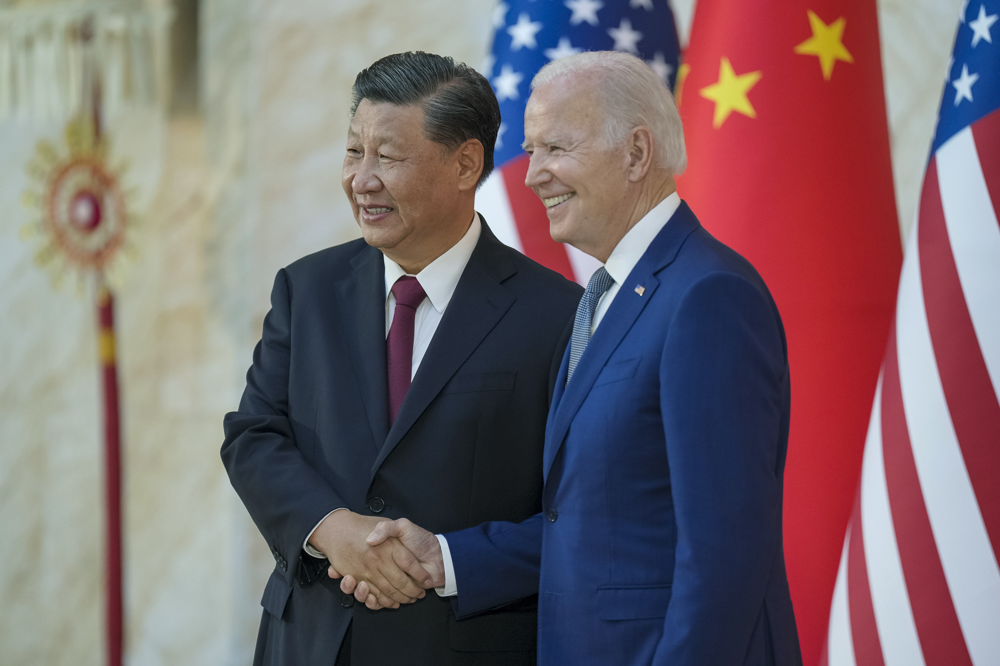
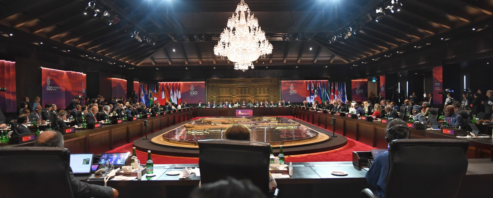

Pada 15–16 November 2022, Nusa Dua, Bali, menjadi ruang paling penting di planet ini. KTT G20 ke-17 digelar di bawah presidensi Indonesia — pertama kalinya negara Asia Tenggara memimpin forum yang menguasai ±85% PDB dunia ini. Temanya: "Recover Together, Recover Stronger". Latarnya: perang Rusia–Ukraina yang mengerek harga pangan dan energi sedunia, plus rivalitas AS–Tiongkok yang makin panas. Semua orang meramalkan KTT ini bakal gagal total. Yang terjadi justru sebaliknya.

Lima Bulan Sebelum Bali: Kyiv, Lalu Moskow
Ceritanya dimulai lima bulan sebelum KTT. Pada 29 Juni 2022, Presiden Joko Widodo tiba di Kyiv dan bertemu Volodymyr Zelenskyy. Keesokan harinya, 30 Juni, ia sudah di Moskow bertemu Vladimir Putin. Ia menjadi pemimpin Asia pertama yang menemui keduanya sejak invasi Rusia 24 Februari 2022.
Misinya diframing soal kemanusiaan dan ketahanan pangan: perang telah memblokir ekspor gandum Ukraina dan pupuk Rusia, mengerek harga pangan sampai ke warung-warung di Indonesia — yang sebelum perang mengimpor gandum dalam jumlah besar dari Ukraina. Di Kyiv, Jokowi menyampaikan undangan resmi kepada Zelenskyy untuk hadir di KTT G20 Bali, dan menawarkan diri membawa pesan Zelenskyy ke Putin.
Catatan redaksi: sejumlah analis menilai misi itu "berniat baik tetapi tidak membuahkan hasil" — tidak ada terobosan perdamaian. Kami tidak mengklaim misi ini mendamaikan siapapun. Yang terverifikasi: posisi netral-aktif Indonesia, dan undangan ke kedua pihak yang membuka jalan bagi kehadiran Zelenskyy di Bali.

14 November: Tiga Jam yang Menenangkan Dua Raksasa
Sehari sebelum KTT dibuka, pertemuan yang mungkin paling penting justru terjadi di luar agenda resmi. Pada 14 November 2022, Joe Biden dan Xi Jinping duduk bertatap muka di Bali — pertama kalinya sejak Biden menjadi presiden AS.
Pertemuan yang dijadwalkan dua jam itu molor jadi lebih dari tiga jam, dengan interpretasi simultan. Biden bilang "tidak perlu ada Perang Dingin baru" antara AS dan Tiongkok. Keduanya sepakat mengelola kompetisi secara bertanggung jawab, menghidupkan kembali dialog pejabat senior, dan menjadwalkan kunjungan Menlu AS Antony Blinken ke Tiongkok awal 2023. Isu Taiwan dan Ukraina ikut dibahas — blak-blakan, kata kedua pihak.

52 Paragraf yang Lahir Tengah Malam
Ekspektasi awalnya suram: rapat-rapat tingkat menteri sebelum KTT gagal menghasilkan joint communiqué. Para sherpa (negosiator diplomatik) sampai harus berunding 6 putaran selama 17+ hari demi satu draf teks.
Paragraf paling alot: perang di Ukraina. Presiden Jokowi dalam konferensi pers usai KTT mengaku "diskusinya sangat alot... debat sampai tengah malam". Akhirnya, pada 16 November 2022, G20 Bali Leaders' Declaration disahkan konsensus — 52 paragraf, mencakup ketahanan pangan dan energi, perdagangan, iklim, kesehatan, dan transformasi digital. Yang bikin takjub: perwakilan Rusia ikut menyetujui isinya.
Kuncinya ada di dua kata: "most members". Deklarasi menyatakan "most members strongly condemned the war in Ukraine" — bukan "all". Rumusan ini mengikuti resolusi Majelis Umum PBB 2 Maret 2022, dan memungkinkan Tiongkok, India, serta Afrika Selatan ikut tanpa mengubah posisi mereka. Hasilnya: dokumen yang mengecam perang — ditandatangani juga oleh negara yang melancarkan perang itu.
Catatan redaksi: jangan baca ini sebagai "seluruh G20 mengecam Rusia". Justru kata "most" itulah mekanisme diplomatik yang membuat Rusia tidak bisa memveto. Sejumlah komentator membaca langkah Rusia menyetujui deklarasi ini sebagai sinyal sekutu-sekutu tradisionalnya mulai menjaga jarak — itu interpretasi, bukan fakta bulat.
Drama belum selesai. Di tengah KTT, sebuah rudal jatuh di wilayah Polandia dan menewaskan dua warga sipil. Para pemimpin G7 dan NATO sampai menggelar rapat darurat Rabu pagi di sela KTT. Biden bilang rudal itu kecil kemungkinan berasal dari Rusia; Jokowi meminta semua pihak tenang dan menahan diri dari eskalasi. Forum ekonomi sempat berubah jadi ruang krisis perang — dan deklarasi tetap lahir.

US$20 Miliar: Hadiah Terbesar Buat Iklim
Selain deklarasi, KTT Bali menghasilkan uang konkret. Pada 15 November 2022, di acara sampingan KTT, Indonesia dan International Partners Group — dipimpin bersama AS dan Jepang, beranggotakan Kanada, Denmark, Uni Eropa, Prancis, Jerman, Italia, Norwegia, dan Inggris — meluncurkan Just Energy Transition Partnership (JETP) senilai US$20 miliar.
Isinya: Indonesia — pengekspor batubara termal terbesar di dunia — berkomitmen memuncak-kan emisi sektor listrik pada 2030, membatasinya di 290 juta ton CO2 (dari baseline 357 juta ton), mencapai net zero sektor listrik pada 2050 (dimajukan 10 tahun), dan menaikkan porsi energi terbarukan hingga ≥34% pada 2030. Dana US$20 miliar dimobilisasi dalam 3–5 tahun lewat campuran hibah, pinjaman lunak, pinjaman pasar, jaminan, dan investasi swasta. World Resources Institute menyebutnya berpotensi menjadi deal pembiayaan iklim tunggal terbesar dalam sejarah.
Di luar itu: Pandemic Fund dibentuk resmi 14 November 2022 (dikelola WHO & Bank Dunia, pledges US$1,4–1,5 miliar), Resilience and Sustainability Trust IMF senilai US$81,6 miliar dinyatakan beroperasi (klaim resmi pemerintah Indonesia), dan ada komitmen melindungi minimal 30% daratan dan 30% lautan dunia pada 2030. KTT ditutup dengan serah terima presidensi ke India (2023) — pembuka rangkaian presidensi Global South: India 2023, Brasil 2024, Afrika Selatan 2025.
Rusia ikut menandatangani dokumen yang mengecam perangnya sendiri. Kata kuncinya cuma dua: "most members".
Analisis: Dibaca Pakai Lensa Ketahanan Nasional
1. Diplomasi adalah instrumen ketahanan, bukan sekadar protokoler. Indonesia memakai kursi presidensi untuk memaksa konsensus di tengah perang — tanpa melompat ke blok manapun. Negara menengah (middle power) yang netral tapi aktif bisa menjadi "jembatan" yang dibutuhkan semua pihak. Ketahanan nasional = kemampuan memengaruhi, bukan cuma kemampuan bertahan.
2. Ketahanan pangan dan energi adalah isu keamanan. Misi Kyiv–Moskow berangkat dari soal gandum dan pupuk — karena perang di Eropa langsung mengerek harga mi instan dan minyak goreng di warung Indonesia. Diplomasi yang berangkat dari perut rakyat adalah diplomasi yang punya legitimasi domestik.
3. Non-blok versi 2022: bukan diam, tapi aktif memfasilitasi. Ada tekanan memboikot Rusia, ada tekanan sebaliknya — Indonesia menolak keduanya, mengundang semua pihak, dan memaksa mereka duduk satu meja. Netral bukan berarti pasif.
4. Multilateralisme masih bisa bekerja — kalau ada yang mau begadang. Rapat menteri gagal, KTT-nya berhasil. Bedanya: tuan rumah yang mau berdebat sampai tengah malam demi satu paragraf. Forum internasional tidak berjalan sendiri; ia butuh tukang damaikan.
Arsip & Referensi
Angka dan peristiwa di artikel ini diverifikasi silang dari sumber-sumber berikut:
- European Parliamentary Research Service — briefing "Outcome of the 2022 G20 summit in Bali, Indonesia" (linimasa, deklarasi 52 paragraf, rumusan "most members", kehadiran para pemimpin).
- Indonesia Business Post — konferensi pers Jokowi pasca-KTT (debat sampai tengah malam, konsensus termasuk Rusia, insiden rudal Polandia).
- Times.ky — deklarasi Bali & pertemuan darurat G7/NATO soal rudal Polandia.
- Kementerian Luar Negeri Tiongkok — briefing Menlu Wang Yi soal pertemuan Xi–Biden 14 Nov 2022.
- NPR — pertemuan Biden–Xi: 3 jam+, "no new Cold War", kunjungan Blinken.
- Pernyataan trilateral UE–AS–Indonesia — peluncuran JETP US$20 miliar, 15 Nov 2022.
- World Resources Institute — JETP sebagai potensi deal iklim terbesar dalam sejarah.
- Fulcrum (ISEAS–Yusof Ishak) — misi Kyiv–Moskow Juni 2022 & penilaiannya.
- Reuters/BusinessWorld — misi pangan & undangan Zelenskyy ke KTT Bali.
- G20 Research Group (Univ. Toronto) / Antara — Pandemic Fund, RST US$81,6 miliar, komitmen 30x30.
- Tony Blair Institute — tiga prioritas presidensi & Pandemic Fund US$1,4 miliar.
Kredit foto arsip: Biden–Jokowi & Biden–Xi — Gedung Putih (via Wikimedia Commons), public domain; Zelenskyy 15 Nov 2022 — Kantor Presiden Ukraina (via Wikimedia Commons), CC0; sidang pleno — Hakuna Zar (via Wikimedia Commons), CC BY-SA 4.0.
Catatan redaksi: kami tidak menyajikan KTT ini sebagai "Indonesia mendamaikan dunia" — pertemuan Biden–Xi adalah inisiatif bilateral, dan misi Kyiv–Moskow tidak menghasilkan terobosan perdamaian. Angka US$81,6 miliar (RST) dan komitmen 30x30 adalah klaim resmi pemerintah Indonesia. Artikel ini non-partisan: yang dibedah adalah manuver negara, bukan figur politik.
Indonesia memimpin dunia dari Bali — di tengah perang. Versi ringkasnya ada di Instagram & TikTok @jejakkuasa — follow biar nggak ketinggalan manuver berikutnya di papan catur dunia.